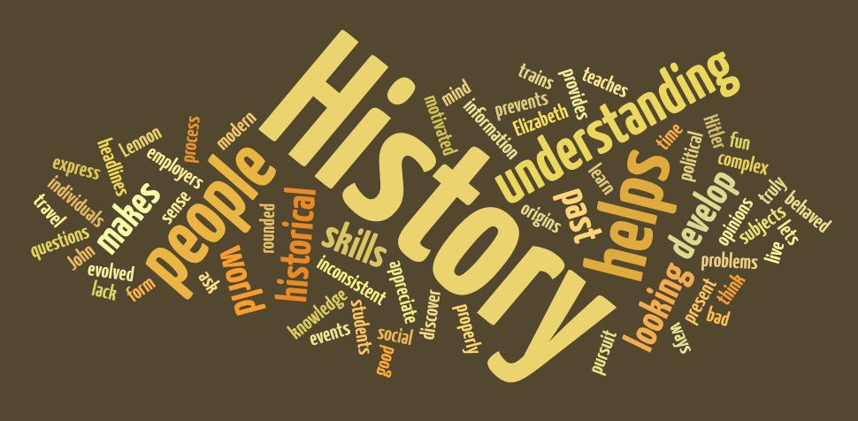

SEJARAH HAK ASASI MANUSIA DI INDONESIA
HAM / Hak Asasi Manusia adalah hak yang melekat pada diri setiap manusia sejak awal dilahirkan yang berlaku seumur hidup dan tidak dapat diganggu gugat siapa pun. Sebagai warga negara yang baik kita mesti menjunjung tinggi nilai hak azasi manusia tanpa membeda-bedakan status, golongan, keturunan, jabatan, dan lain sebagainya.Melanggar HAM seseorang bertentangan dengan hukum yang berlaku di Indonesia. Hak asasi manusia memiliki wadah organisasi yang mengurus permasalahan seputar hak asasi manusia yaitu Komnas HAM. Kasus pelanggaran ham di Indonesia memang masih banyak yang belum terselesaikan / tuntas sehingga diharapkan perkembangan dunia ham di Indonesia dapat terwujud ke arah yang lebih baik. Salah satu tokoh ham di Indonesia adalah Munir Said Thalib yang tewas dibunuh di atas pesawat udara saat menuju Belanda dari Indonesia. Pada hakikatnya “Hak Asasi Manusia” terdiri atas dua hak dasar yang paling fundamental, ialah hak persamaan dan hak kebebasan. Dari kedua hak dasar inilah lahir hak-hak asasi lainnya atau tanpa kedua hak dasar ini, hak asasi manusia lainnya sulit akan ditegakkan. Mengingat begitu pentingnya proses internalisasi pemahaman Hak Asasi Manusia bagi setiap orang yang hidup bersama dengan orang lainnya, maka suatu pendekatan historis mulai dari dikenalnya Hak Asasi Manusia sampai dengan perkembangan saat ini perlu diketahui oleh setiap orang untuk lebih menegaskan keberadaan hak asasi dirinya dengan hak asasi orang lain. HAM berlaku secara universal. Dasar-dasar HAM tertuang dalam deklarasi kemerdekaan Amerika Serikat (Declaration of Independence of USA) dan tercantum dalam UUD 1945 Republik Indonesia. Seperti pada beberapa pasal dan ayat berikut ini :
- Pasal 27 ayat 1
- “Segala warga negara bersamaan kedudukannya dalam hukum dan pemerintahan dan wajib menjunjung hukum dan pemerintahan itu dengan tidak ada kecualinya”
- Pasal 28
- “Kemerdekaan berserikat dan berkumpul, mengeluarkan pikiran dengan lisan dan tulisan dan sebagainya ditetapkan dengan undang-undang”
- Pasal 29 ayat 2
- Negara menjamin kemerdekaan tiap-tiap penduduk untuk memeluk agamanya masingmasing dan untuk beribadat menurut agamanya dan kepercayaannya itu”
- Pasal 30 ayat 1
- “Tiap-tiap warga negara berhak dan wajib ikut serta dalam usaha pembelaan negara”
- Pasal 31 ayat 1
- “Tiap-tiap warga negara berhak mendapat pengajaran”
PEMIKIRAN DAN PERKEMBANGAN HAM DI INDONESIA
Hak Asasi Manusia adalah hak-hak yang telah dimiliki manusia sejak ia masih dalam kandungan. Hak-hak ini mengandung prinsip moral atau norma yang mengatur setiap perilaku manusia dan dilindungi oleh hukum lokal maupun internasional. Ketentuan tentang HAM telah diatur dalam pembukaan dan 30 pasal pada Universal Declaration of Human Rights yang menjamin dan mengakui hak-hak asasi manusia di dunia yang dimuat dalam konstitusi negara masing-masing. Sedangkan di Indonesia sendiri, HAM diatur dalam UU Nomor 39 Tahun 1999. Perkembangan pemikiran HAM di Indonesia mengalami pasang dan surut yang secara jelas dapat terlihat melalui tabel periodesasi sejarah Indonesia, mulai tahun 1908 hingga sekarang. Pada dasarnya, konsep HAM bukanlah semata-mata sebagai konsep tentang hak-hak asasi individual, melainkan juga kewajiban-kewajiban asasi yang menyertainya. Periode perkembangan HAM di Indonesia dipaparkan sebagai berikut:
- Periode 1908-1945
- Periode 1945-1950
- Periode 1950-1959
- Periode 1959-1966
- Periode 1966-1998
- Periode 1998-Sekarang
1. Periode 1908-1945
Konsep pemikiran HAM telah dikenal oleh Bangsa Indonesia terutama sejak tahun 1908 lahirnya Budi Utomo,
yakni di tahun mulai timbulnya kesadaran akan pentingnya pembentukan suatu negara bangsa (nation state)
melalui berbagai tulisan dalam suatu Majalah Goeroe Desa. Konsep HAM yang mengemuka adalah konsep-konsep
mengenai hak atas kemerdekaan, dalam arti hak sebagai bangsa merdeka yang bebas menentukan nasib sendiri
(the rights of self determination). Namun HAM bidang sipil, seperti hak bebas dari diskriminasi dalam segala
bentuknya dan hak untuk mengeluarkan pikiran dan pendapat mulai juga diperbincangkan. Bahkan konsep mengenai
hak untuk turut serta dalam pemerintahan telah dikemukakan oleh Budi Utomo. Perkembangan HAM di Indonesia
selanjutnya tumbuh seiring dengan kemunculan berbagai organisasi pergerakan yang intinya sebagaimana diperjuangkan
oleh Perhimpunan Indonesia yaitu hak menentukan nasib sendiri. Pada masa-masa selanjutnya,
pemikiran tentang demokrasi asli Bangsa Indonesia yang antara lain dikemukakan Hatta, makin memperkuat anggapan
bahwa HAM telah dikenal dan bukanlah hal baru bagi Bangsa Indonesia. Perkembangan pemikiran HAM mengalami masa-masa
penting manakala terjadi perdebatan tentang Rancangan UUD oleh BPUPKI.
Supomo mengemukakan bahwa HAM berasal dari cara berpikir yang liberal dan individualistik yang menempatkan warga negara
berhadapan dengan negara, dan karena itu, paham HAM tidak sesuai dengan “ide integralistik dari Bangsa Indonesia”.
Menurut Supomo manusia Indonesia menyatu dengan negaranya dan karena itu tidak masuk akal mau melindungi individu dari negara.
Debat ini muncul kembali pada pertengahan Juli 1945. Sukarno mengemukakan bahwa keadilan yang diperjuangkan bagi Bangsa Indonesia
bukanlah keadilan individual, melainkan keadilan sosial dan karena itu HAM dan hak-hak dasar warga negara tidak pada tempatnya dalam UUD.
Sebaliknya, Muhammad Hatta dan Muhammad Yamin memperingatkan bahwa bisa saja negara menjadi negara kekuasaan dan karena itu hak-hak
dasar warga negara perlu dijamin. Akhirnya tercapailah Pasal 28 UUD 1945, dimana hak-hak dasar demokratis seperti hak untuk berserikat
dan berkumpul dan untuk menyampaikan pendapat diatur.
Hak asasi barulah mendapatkan tempat yang penting utamanya pada masa KRIS 1949 dan UUDS 1950, karena kedua UUD atau konstitusi
itu memuat HAM secara terperinci. Hal itu disebabkan KRIS 1949 dibuat setelah lahirnya Declaration of Human Right 1948, sedangkan
UUD 1950 adalah perubahan dari KRIS 1949 melalui UU Federal No. 7 tahun 1950.
2. Periode 1950-1959
Meskipun usia RIS relatif singkat, yaitu dari tanggal 27 Desember 1949 sampai 17 Agustus 1950, namun baik sistem kepartaian multi partai maupun sistem pemerintahan parlementer yang dicanangkan pada kurun waktu pertama berlakunya UUD 1945, masih berlanjut. Kedua sistem yang menumbuhkembangkan sistem politik demokrasi liberal/parlementer tersebut semakin berlanjut setelah Indonesia kembali menjadi negara kesatuan dengan berlakunya UUDS 1950 pada periode 17 Agustus 1950-5 Juli 1959. bahkan pada periode ini suasana kebebasan yang menjadi semanggat demokrasi liberal sangat ditenggang, sehingga dapat dikatakan bahwa baik pemikiran maupun aktualisasi HAM pada periode ini mengalami “pasang” dan menikmati “bulan madu”. Karena:
- Semakin banyaknya tumbuh partai politik dengan beragam ideologinya masing-masing
- Kebebasan pers sebagai salah satu pilar demokrasi betul-betul menikmati kebebasannya
- Pemilihan Umum sebagai pilar lain dari demokrasi berlangsung dalam suasana kebebasan, fair dan demokratis
- Parlemen atau Dewan perwakilan rakyat sebagai representasi dari kedaulatan rakyat menunjukan kinerja dan kelasnya sebagai wakil-wakil rakyat dengan melakukan kontrol atau pengawasan
- Wacana dan pemikiran tentang HAM memperoleh iklim yang kondusif
3. Periode 1959-1966
Memasuki periode kedua berlakunya UUD 1945 yaitu sejak dikeluarkannya Dekrit Presiden 5 Juli 1959, gagasan atau konsepsi Presiden Soekarno mengenai demokrasi terpimpin dilihat dari sistem politik yang berlaku yang berada di bawah kontrol/kendali Presiden. Dalam perspektif pemikiran HAM, terutama hak sipil dan politik, sistem politik demokrasi terpimpin tidak memberikan keleluasaan ataupun menenggang adanya kebebasan berserikat, berkumpul dan mengeluarkan pikiran dengan tulisan. Di bawah naungan demokrasi terpimpin, pemikiran tentang HAM dihadapkan pada restriksi atau pembatasan yang ketat oleh kekuasaan, sehingga mengalami kemunduran (set back) sebagai sesuatu yang berbanding terbalik dengan situasi pada masa Demokrasi Parlementer.
4. Periode 1966-1998
Pemberontakan G30S/PKI tanggal 30 September 1966 yang diikuti dengan situasi chaos mengantarkan Indonesia kembali mengalami masa kelam kehidupan berbangsa. Presiden Soekarno mengeluarkan Supersemar yang dijadikan landasan hukum bagi Soeharto untuk mengamankan Indonesia. Masyarakat Indonesia dihadapkan kembali pada situasi dan keadaan dimana HAM tidak dilindungi. Hal ini disebabkan oleh pemikiran para elite kekuasaan terhadap HAM. Umumnya era ini ditandai oleh pemikiran HAM adalah produk barat. Pada saat yang sama Indonesia sedang memacu pembangunan ekonomi dengan mengunakan slogan “pembangunan” sehingga segala upaya pemajuan dan perlindungan HAM dianggap sebagai penghambat pembangunan. Hal ini tercermin dari berbagai produk hukum yang dikeluarkan pada periode ini, yang pada umumnya bersifat restriktbif terhadap HAM.